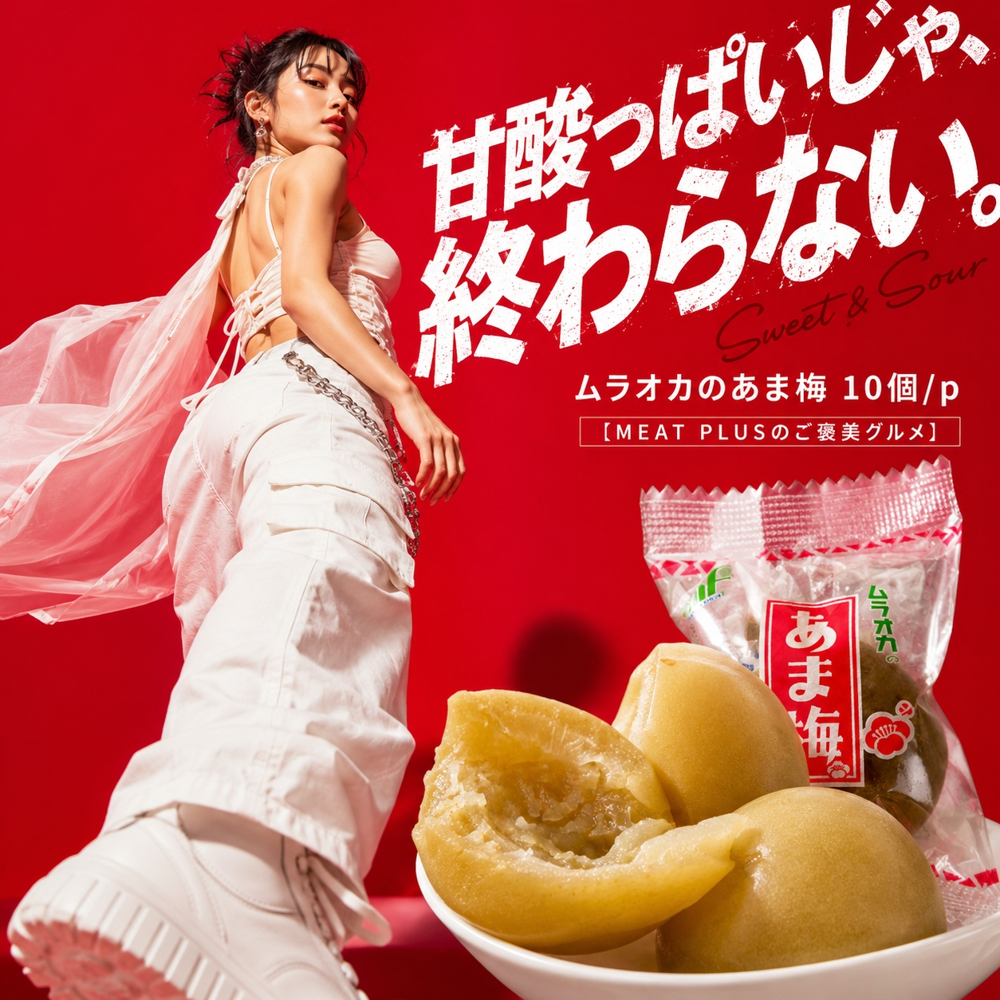
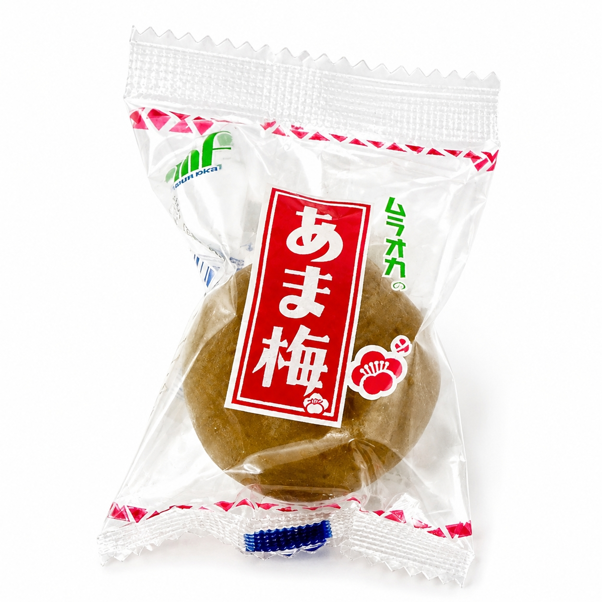
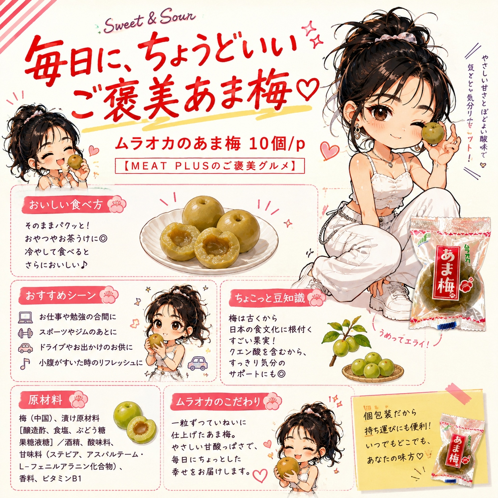

SCENE 01

k スイーツ・菓子
【カリッとはじける食感、じゅわっと広がる甘酸っぱさ。】
仕事や勉強の合間に、ちょっと口さみしくなった時。そんな時に食べたくなる、どこか懐かしい味わいの「ムラオカのあま梅」はいかがでしょうか。 カリッとかじれば、心地よい歯ごたえとともに、じゅわっと優しい甘さが口いっぱいに広がります。酸味はまろやかで、後から追いかけてくる爽やかな梅の風味が絶妙なバランス。一つ、また一つと、思わず手が伸びてしまうおいしさです。 1パックに10個入っているので、ご家庭のお茶請けにはもちろん、オフィスの引き出しにストックしておくのもおすすめです。常温で保存できるので、ドライブや旅行のお供にもぴったり。お子様のおやつから、大人の気分転換まで、幅広いシーンで活躍します。 あなたの毎日に、カリッとおいしいひとときを添えてみませんか。
公式サイトへ移動します。価格・在庫・配送条件は移動先で最終確認してください。


PRODUCT INFORMATION
梅（中国）、漬け原材料［醸造酢、食塩、ぶどう糖果糖液糖］／酒精、酸味料、甘味料（ステビア、アスパルテーム・L-フェニルアラニン化合物）、香料、ビタミンB1
FAQ
酸味は控えめで、優しい甘さが特徴の甘いカリカリ梅です。お子様から大人まで楽しめる、どこか懐かしい味わいに仕上げています。
直射日光、高温多湿を避けて常温で保存してください。商品は個包装ではなく、1つのパックに10個入っています。開封後はお早めにお召し上がりください。
MEAT PLUS OFFICIAL SHOP
仕入れ・加工・梱包・発送まで自社で行うMEAT PLUSの公式オンラインショップでご注文いただけます。
公式オンラインショップで購入する